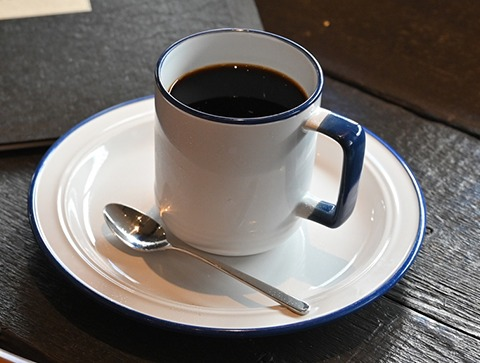
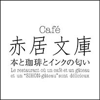
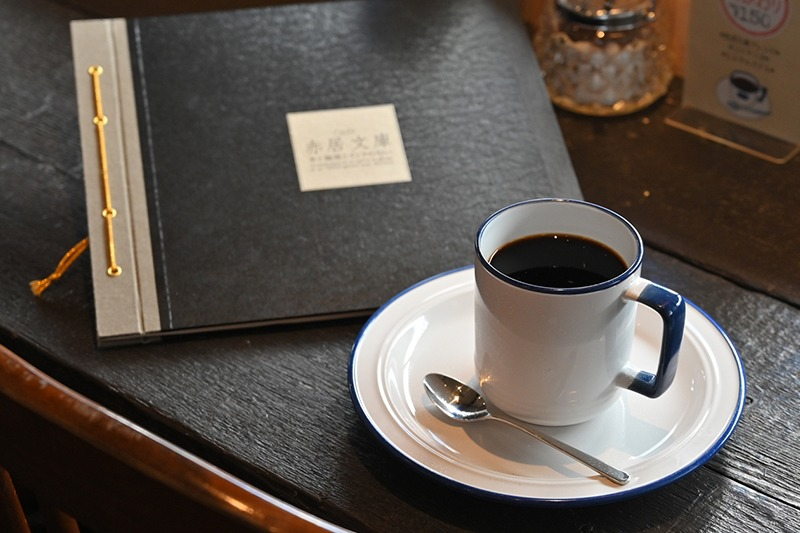
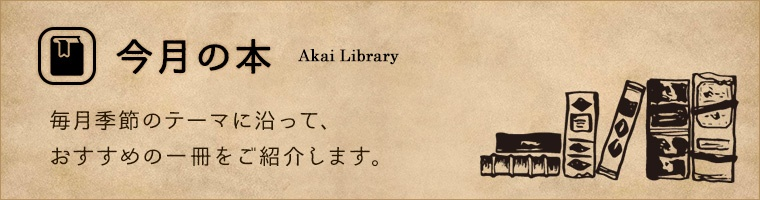
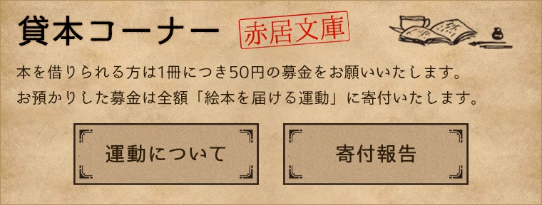
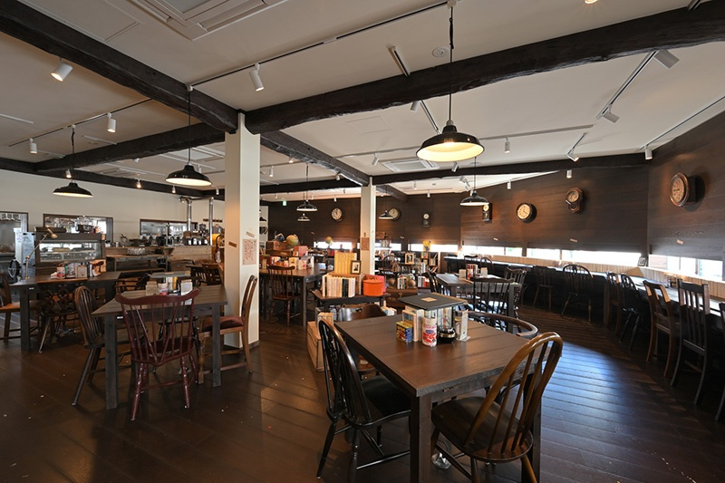
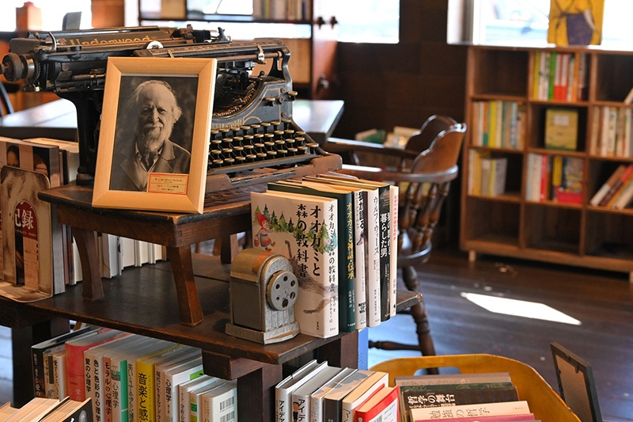

一杯のための珈琲
注文をいただいてから豆を挽き、 一杯ずつハンドドリップで丁寧に淹れています。 挽きたての香りも、味わいのひとつです。


一冊の本を開くと、そこにはいつも、少しだけ違う時間が流れています。
ページをめくる指先に、紙とインクのかすかな匂いが触れる瞬間。
日常の喧騒から静かに離れ、物語の中に身を置くひととき。
そのそばには、いつも一杯の珈琲を。 湯気とともに立ちのぼる香りが、読書の時間をより深く、 より豊かなものへと変えてくれます。
赤居文庫は、本と珈琲、そして静けさが寄り添う場所。 忙しい日々のなかで、ほんの少しだけ、 自分自身のための時間を取り戻していただけたらと願っています。
ただ本と珈琲があるだけではない、赤居文庫ならではの過ごし方があります。

注文をいただいてから豆を挽き、 一杯ずつハンドドリップで丁寧に淹れています。 挽きたての香りも、味わいのひとつです。

季節のテーマに沿って選ばれた本が、 テーブルにそっと置かれています。 ふと手にとった一冊が、新しい出会いになることも。

本を借りられる方は、1冊につき50円の募金をお願いしています。
お預かりした募金は全額、
「絵本を届ける運動」へ寄付されます。
決まった作法はありません。ただ、あなたのペースで、 本と珈琲と静けさを味わっていただければと思います。
棚に並んだ古い文庫本の背表紙を、 ゆっくりと指でたどりながら。 今日の気分に寄り添う一冊を、 じっくりと探す時間そのものをお楽しみください。
丁寧に淹れられた一杯の珈琲を、 香りごと味わうように。 本のページをめくる合間に、 静かなひと呼吸を添えてくれます。
何をするでもなく、ただ座っているだけの時間も。 騒がしい日常から少し離れて、 心にゆとりの余白が生まれていきます。
赤居文庫は、古い文庫本と珈琲の香りに包まれた、
落ち着いた喫茶空間です。
静かに読書を楽しみたい方、
ひとりの時間をゆっくりと過ごしたい方のための場所として、
日々お迎えしております。
上記情報は変更となる場合がございます。最新情報は店舗の公式案内をご確認ください。
本と珈琲、そして静けさに包まれた店内の一場面を、 写真でご紹介します。


本と珈琲とインクの匂いに包まれる、静かな時間へ。 地図でお店を探すか、Instagramで最新の様子をご覧ください。